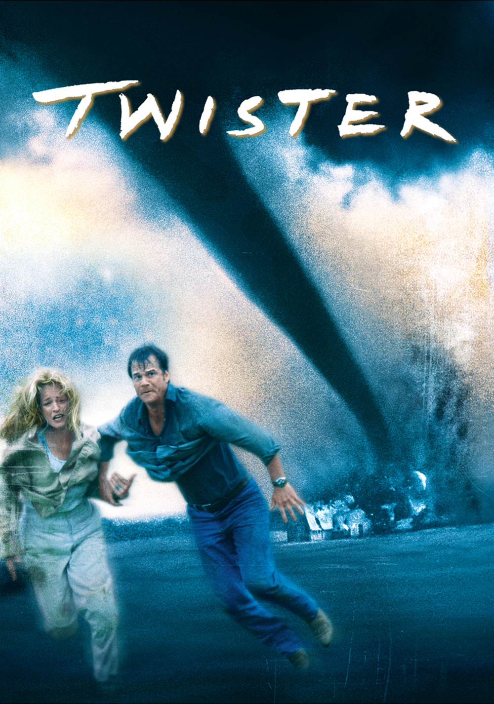

| Film | Director | Release Date | Summary |
|---|---|---|---|
Harry Potter And The Philosopher's Stone |
Chris Columbus | 2001 | An orphaned boy enrolls in a school of wizardry, where he learns the truth about himself, his family and the terrible evil that haunts the magical world. |
| Citizen Kane |
Orson Welles | 1941 | Following the death of publishing tycoon Charles Foster Kane, reporters scramble to uncover the meaning of his final utterance; 'Rosebud'. |
Eternal Sunshine Of The Spotless Mind |
Michel Gondry | 2004 | When their relationship turns sour, a couple undergoes a medical procedure to have each other erased from their memories. |
| Pusher |
Nicolas Winding Refn | 1996 | A drug pusher grows increasingly desperate after a botched deal leaves him with a large debt to a ruthless drug lord. |
Twister  |
Jan de Bont | 1996 | Bill and Jo Harding, advanced storm chasers on the brink of divorce, must join together to create an advanced weather alert system by putting themselves in the cross-hairs of extremely violent tornadoes. |